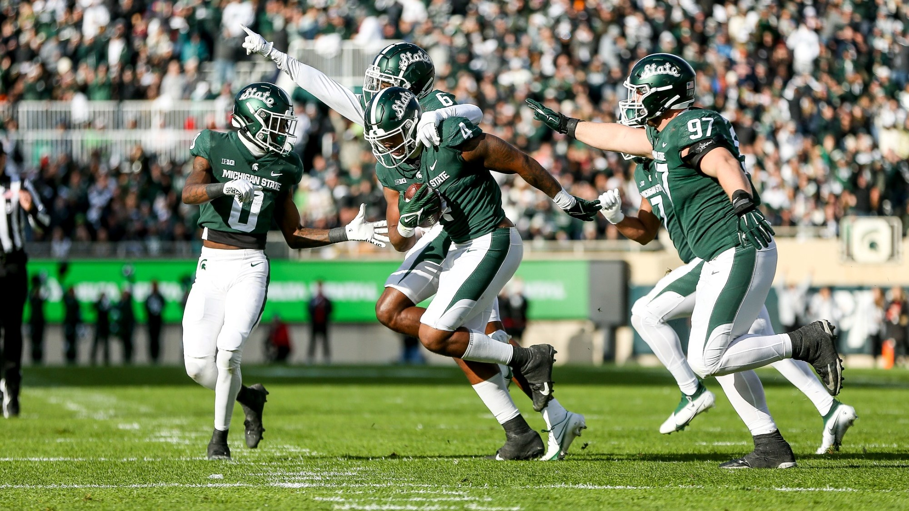

Michigan State Stuns Wisconsin in 2-OT Homecoming Game!
| Wins | Losses | TBD |
|---|---|---|
| W. Michigan | Washington | Michigan |
| Akron | Minnesota | Illios |
| Wisconsin | Maryland | Rutgers |
| Ohio State | Indiana | |
| Penn State |
Fans of Michigan State University Football would be pleased to hear that Michigan State managed to outlast Wisconsin in a battle of attrition on the night of October 15th. The game was truly a thriller featuring everything MSU fans have come to love under new head coach Mel Tucker. Once again Jaden Reed proved to be the savior of the team, throwing a flea flicker to the new breakout star Keon Coleman. This was a very significant win for MSU as they are now 1-3 in conference play and are no longer one of the 2 teams in the BIG10 without a conference win. The Spartans move on to become 3-4 overall with a bye week next week before they take on their rival #4 ranked Michigan in Ann Arbor over Halloween weekend. With the desire to keep the Paul Bunyan trophy home and beat their undefeated rival on the road and finally prove themselves', things seem to be setting up nicely for a potential upset in Ann Arbor. Tune in on the evening of the 29th to see if the Michigan State Spartans can pull off this upset and keep Mel Tucker undefeated against the University of Michigan and Jim Harbaugh.
